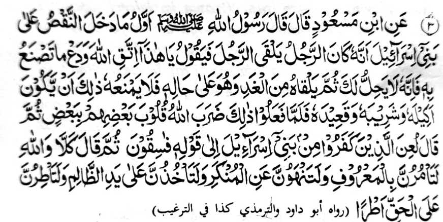
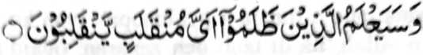

Miyaka thitayan ko Ibn Mas’ood (Radhiallaho Anho) a pitharo iyan a pitharo o Rasulollah (Sallallaho Alaihi Wasallam), Aya kiyapo-onan sa kiyadarodos o Bani Israel na mata-an a igira miya-ilay o tao a barasimba so mama a baradosa na tharo-on niyan non, ‘Hay! Kaleken ka so Allah! Taregen ka angkanan a galebek ka ka mata-an a sekaniyan na di reka khapakay.” Oriyan niyan na mato-on niyan sekaniyan peman ko kapita iyan sa giyoto den-i betad iyan na da niyan non peman saparen angkoto a galebek na pekhan ago phaginom go phagontod sekaniyan a ped iyan [angkoto a baradosa]. Soden so kiya nggalebeka iron ro-o na piyakandatar o Allah so mapapadalem ko poso iran [a marata].” Oriyan niyan na pitharo iyan, "...Pimorka-an so miyamangongkir ko Bani Israel ...." taman ko katharo a "....manga songkelid." Oriyan niyan na miyatharo iyan, "Kena, ka ibet ko Allah ka paliyogat rekano so kisogo-on niyo ko mapiya go so kisaparen niyo ko marata go so karena niyo ko lima o salimbot sa mapakaphasiyonot iyo sekaniyan ko benar. ”
Isa a Hadith a pitharo iyan a so Nabi (Sallallaho ‘Alaihi Wasallam) na mi-indag phiya-piya na baden minikorot sa miyakaontod na miyatharo iyan, “Ibet ko Allah ka di kano den makaselang sa maliwanag taman sa di niyo maren so tangarasi ko kapephangarasi niyan.”
Si-i ko isa a Hadith na so Nabi (Sallallaho ‘Alaihi Wasallam) a miyatharo iyan, “Paliyogat rekano so kipamarinta-an niyo ko Benar, go so kisaparen niyo ko manga baradosa si-i ko manga haraam, go so karena niyo ko tangarasi si-i ko kapangarasi.”
Si-i ko salakao a Hadith na so Nabi (Sallallaho ‘Alaihi Wasallam) na miyatharo iyan, “Paliyogat rekano so kipanolonen ko Benar, go so karena niyo ko manga baradosa ko inisapar a manga nganin, go so ka-alangi niyo ko tangarasi, go so kawita kiran ko lalan a ontol, ka odi [niyo wa-i nggalebeka] na khamoreka-an kano go so manga poso iyo na pembaloy a sosio sa lagid o inikidi-a o Allah ko Bani Israel.” So Nabi (Sallallaho ‘Alaihi Wasallam) na biyatiya iyan so manga Ayaat sa Qur’an a mitotoro iran angka-i a bandingan. So manga Bani Israel na kiyamoreka-an siran sabap sa liyo pen ko manga ped a sabap, na di ran izapar ko manga tao so inisapar a manga nganin. Imanto sangka-iya masa tano na ibebetad sa kambilangatao so kipagayonen ko langon o tao ago so kasongeda ko omani isa ko apiya anda kalilimod. Gi-i ran tharo-on a ped ko manga sarat o kambilanga tao so kipagepeda-an ko manga baradosa.
Marayag a ribata-i a ola-ola, sabap sa aden a kakhapakay o kambengel-bota igira kanget, ogaid na diden khapakay so kapakipelomameka ko manga tao a tangarasi ago so manga baradosa. Aya taman a kaito iyan na paliyogat ko omani isa so kapando-i niyan ko manga tao a pharatiyaya-on ibarat o manga tao a kamimilikan niyan, so manga talasogo-ai niyan, go so karoma niyan, go so manga wata iyan, ago so manga tonganay niyan. Si-i sangkanan a betad, na so kambengel-bota ko Tabligh na di pema-apen o Allah.
So Hazrat Sufyan Thauri na miyatharo iyan, “So tao a pekhababaya-an sekaniyan o manga tonganay niyan ago so manga siringan niyan, na ipaga-arangan nami sekaniyan sa madarainonen ko kipephanolonen niyan ko titho a ‘enda-o ko Agama (amay ka di niyan siran madolon).”
Madakel a Hadith a pitharo iyan a igira so dosa na pagenes a kiyasogok iyan, na so marata a onga niyan na si-i bo pethagorar ko tao a mindosa; ogaid na amay ka so dosa na mapayag a kiyasogok iyan, na so langon o phakagaga-on somapar, na aya den a khabolosan niyan na ndayamang ko manga tao a melilibeta-on.
Imanto na ilaya den a omani isa, pira timan a manga dosa a pekhasogok sa danga iyan oman gawi-i, a minsan pen khagaga niyan so kisaparen niyan non ogaid na tiyago iyan sa mandi katawan. Go tanto a piyakarata-rata sa ginawa a igira aden a phamayandeg sa kitareg o marata. na so manga tao a da a meleng iran ago da a kaya iran na kena ba giyabo a di ran non kapagogopi ka ba iran den pezopaka sekaniyan.

"...Na katokawan den o siran a manga salimbot o antona-a darepa a khandodan i niran.' [Surah Ash-Shu’ara:227]